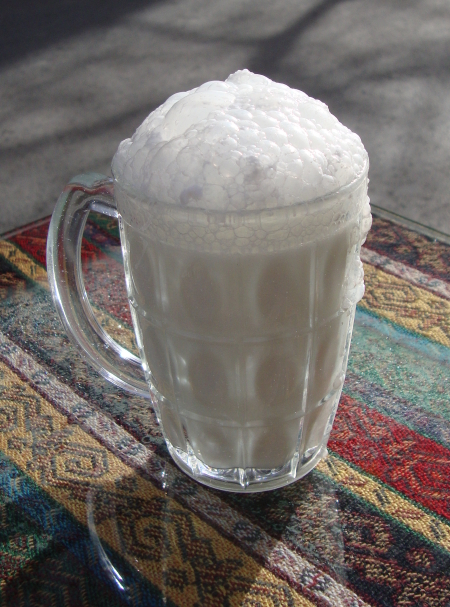

اشهر مدن تركيا
- المشروب الوطني الأول في تركيا ورمز الضيافة والتواصل الاجتماعي في كل بيت ومقهى. تتصدر تركيا دول العالم في استهلاك الفرد للشاي بمعدل يصل إلى 3 أو 4 أكواب يومياً، ويُزرع معظمه في منطقة ريزا المطلة على البحر الأسود شرق البلاد.
- واحدة من أقدم وأعرق تقاليد تحضير القهوة في العالم، وقد أدرجتها منظمة اليونسكو عام 2013 على القائمة التمثيلية للراث الثقافي غير المادي للبشرية. تعود جذورها إلى القرن السادس عشر خلال العصر العثماني عندما وصلت حبوب البن إلى إسطنبول
- المشروب التقليدي الأكثر شعبية في تركيا، وهو عبارة عن مشروب لبن زبادي بارد ومالح يُعد الرفيق الأساسي للوجبات وخاصة أطباق اللحوم والكباب. يعود تاريخه إلى آلاف السنين حيث ابتكرته القبائل التركية البدوية في آسيا الوسطى لحفظ الحليب.



حقوق الموقع محفوظة ©